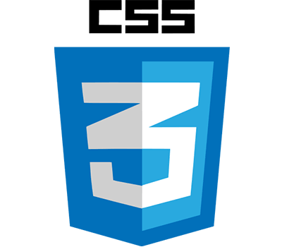
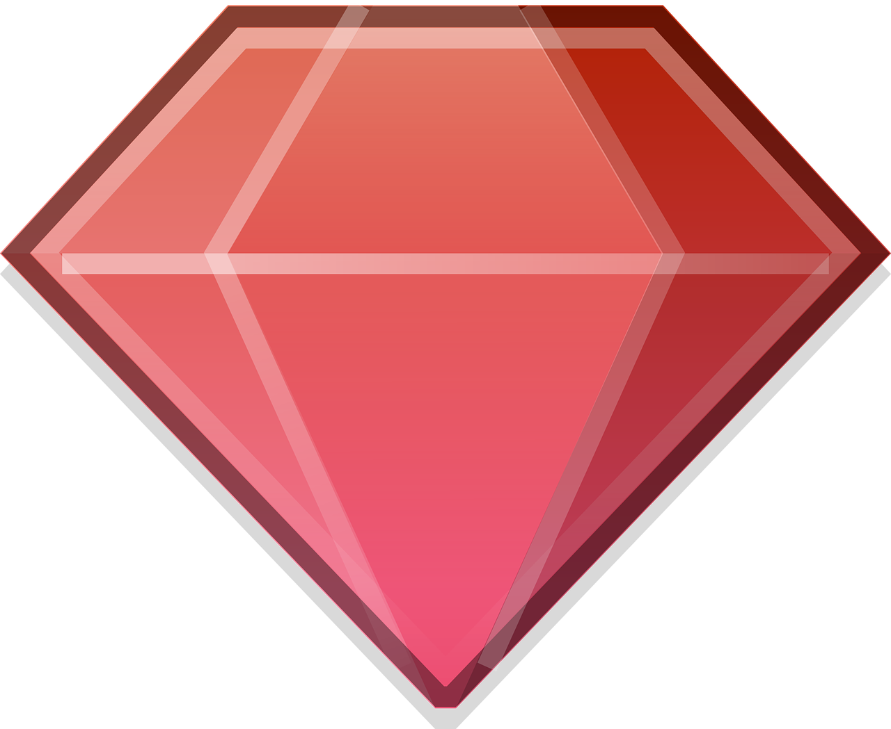

Hello, my name is Ken! In this class, I wish to learn more about the back-end of web development with hopes of becoming a full-stack web developer!
Courses I've taken
Intro to Program Design
Intro to Object-Oriented
Discrete Math
Algorithms and Data Str.
Systems
HCI
Social Imp.
Machine Org & Assembly
Foundations
OS
Soft Eng
Experience

HTML
A lot of experience

CSS
A lot of experience

Javascript
Some experience

Java
A lot of experience

Ruby
No experience

Python
A lot of experience

Unit Testing
Some experience